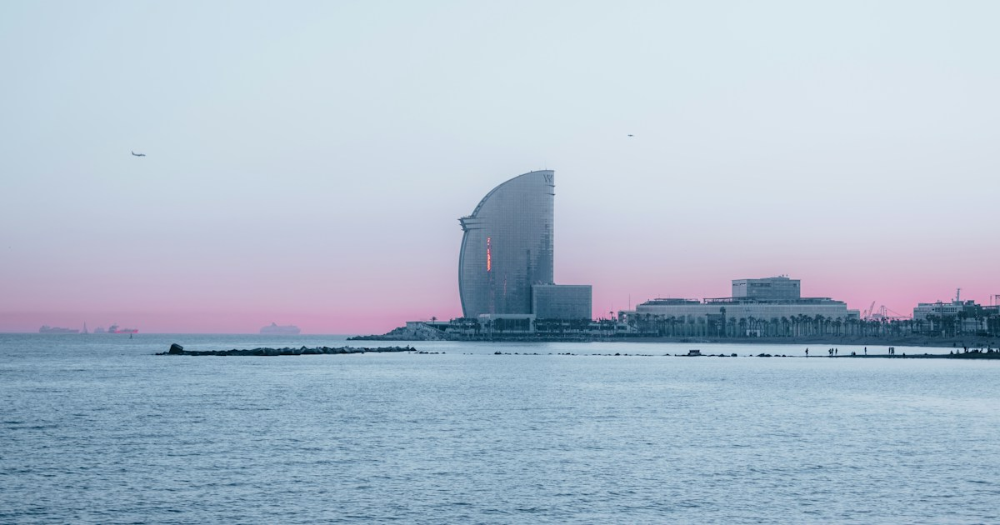

Feriapiso — Apartamentos turísticos en Barcelona
Apartamentos turísticos en Barcelona para tu próxima estancia junto al Mediterráneo.
El sitio principal (feriapiso.com) está temporalmente en mantenimiento. Volveremos pronto.

Apartamentos turísticos en Barcelona para tu próxima estancia junto al Mediterráneo.
El sitio principal (feriapiso.com) está temporalmente en mantenimiento. Volveremos pronto.